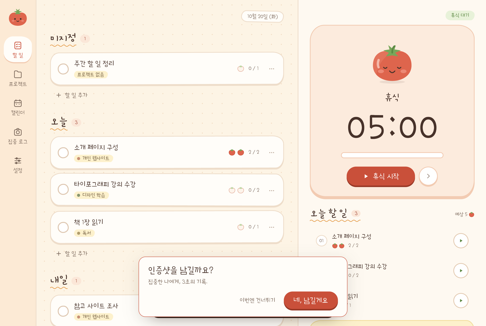

조금 더
가늠하기 쉬운
포모도로 단위
포모도로 단위는 추정의 복잡함을 줄여줍니다.
그냥 머릿속에 있는 숫자가 정답이에요.

너무 촘촘한
계획보다는
10:30에 할 일을 10:35에 시작했다고 계획 실행을 실패한 것일까요? 그렇지 않죠. 하지만 실패한 기분이 들기 마련입니다.
다른 것 필요 없이 포모도로 시간만 추정해보세요. 사고가 더 유연해집니다.
포모도로는
가장 생산적인
타이머입니다.
집중할 시간과 쉴 시간을 나누면 지금 할 일이 분명해집니다. 타이머가 끝날 때까지 하나의 작업에 집중하고 짧은 휴식 후 다음 포모도로를 시작하세요.
작업마다 사용한 포모도로가 기록으로 남습니다. 오늘의 실행을 확인하고 다음 계획에 필요한 분량을 가늠해보세요.
작은 순간이 모여 추진력이 됩니다.
타이머가 끝났다면 인증샷을 한 번 남겨볼까요? 타이머가 흘러가는 동안 무엇을 했는지 3초 간의 짧은 동영상으로 남겨보세요.
매주 이렇게 모은 영상을 다시 둘러보면 어떨까요? 다음 주에도 열심히 할 힘이 생길 거에요.
